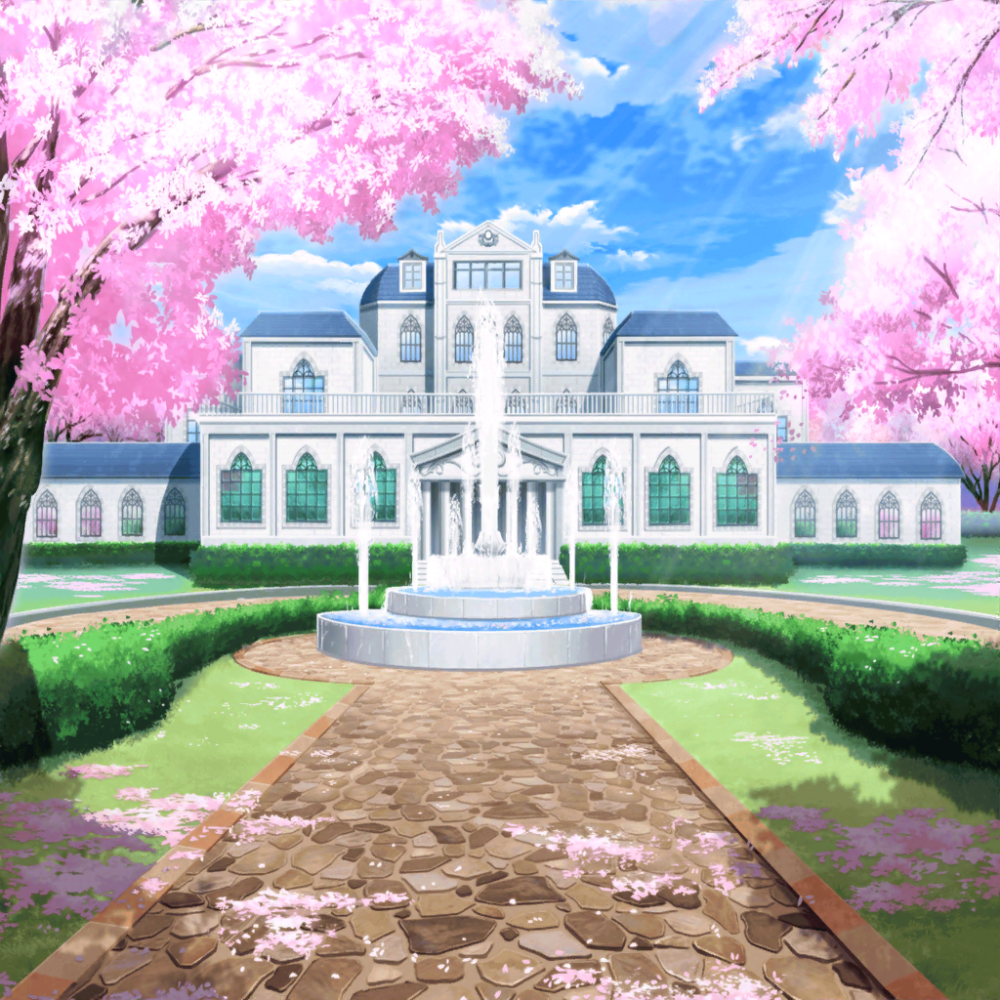

香澄
本当に楽しかったね～！ 今日のお花見！
香澄
実は私、お花見って初めてだったんだけど、
こんなに楽しいって思わなかった！
はぐみ
はぐみはもー、お腹いっぱ～い！
もうなんにも入らないよ～
こころ
あたしはまだお花見したいわ！
まだまだこれからじゃない！
沙綾
ごめんね、こころ。私達もまだいたいんだけど、
明日学校だしそろそろ帰らなきゃいけないから
こころ
それなら、明日学校でお花見の続きやりましょう！
はぐみ
さんせーい！
有咲
（……もはや、これくらいの軽いボケには
ツッコむ気力さえ失ったな）
イヴ
けど、今日は本当に楽しかったです！
ありがとうございました！
イヴ
ずっと憧れてたお花見ができて本当に感謝してます！
桜の下にいると、不思議と素直な気持ちになって、
いつも以上にたくさんおしゃべりしてしまいました！
はぐみ
だよねー！ みんなと話せてホント最っ高だった！
この花女のメンバーで、また来月もお花見しよーよ！
有咲
（来月って……）
美咲
ええ〜……来月じゃもう、桜散ってるよね？
有咲
……そ、そうですね。おほほほ
香澄
けどさ、それぞれバンドは違っても、音楽をやってる仲間が、
同じ学校にこんなにいてホントに嬉しいんだ、私！
沙綾
これからも切磋琢磨していけるといいね
たえ
……たけのこご飯、美味しかったなあ♪
有咲
（今か！？ まとまりかけたときに言う感想か、それ！？）
りみ
……それじゃあ、行こうか？
な、なんか帰るの名残惜しいね
こころ
それじゃあ、まだまだやればいいじゃない！
お花見、延長戦突入よ！
有咲
（……結局おまえは、戦うことしか頭にねーな）
香澄
わかった！ それじゃあ、こうしない！？
有咲
（出たっ！ 香澄のこのひらめきのトーン！
また超絶イヤな予感がするぞっ！）
香澄
次は、また今度、別の場所で集まろうよっ！
はぐみ
うん、いいね！ どこ？ どこにするの！？
香澄
例えば……花咲川の土手、とか？
あそこも桜、キレイだったし
りみ
あ！ CiRCLEのカフェは？
沙綾
あそこだと、あんまり騒いだら迷惑になっちゃわないかな？
りみ
そ、そっか……
はぐみ
そういえばさっき、あーちゃん家の蔵は音が
漏れにくいって言ってたよね！？
有咲
げっ……！
こころ
いいわね！ ちょうど蔵にも行ってみたかったし、
一石二鳥じゃない！
香澄
それいいじゃん！ 有咲の家にしようよ！
私、さんせーい！
有咲
……
イヴ
蔵にある骨董品、見てみたいです♪
もしかして有名なサムライの鎧とか……
香澄
あ、それじゃあ有咲の家でお宝探しするのはどうっ！？
ぜったいたのしーよ！！
こころ
素晴らしいアイディアだわ！
さすが香澄ね！
有咲
……
はぐみ
はぐみも絶対行くー！ で、いつにする？
有咲
お前ら……
有咲
勝手に決めんなっつーの！！！！！！
蔵で宝探し！？ ただでさえ騒がしいやつらが来るのに、
宝探し！？ 桜はどこいったんだよ！ 蔵じゃ桜見えねーだろ！
有咲
つか、誰かその案にツッコんだりしろよ！？
おかしーだろどう考えても！？
ああ、もうっ！！
イヴ、美咲
…………
香澄、たえ
…………
りみ、沙綾
…………
こころ、はぐみ
…………
イヴ
……あ、アリサ……さん……？
有咲
…………あ
香澄
有咲、やっと調子が出たね
有咲
…………あの、うちに来るのは……イヤです……わ。
おほほほほ……
美咲
……市ヶ谷さん、もう諦めよう
有咲
ち、ちくしょーっ！
も、もうこうなったら、何も隠すことない！
言わせてもらうぞっ！ こっちはずっとこらえてたんだっ！
有咲
まず香澄！ なんだ、お花見開始のときの掛け声！
何、疑問を持たずに受け入れてるんだ！
少しは不思議に思えー！
有咲
そんで、黒服の人達のことも。よく受け入れたなっ！？
早すぎだろ！？ 疑問とか、浮かばないわけ！？
もーこっちはツッコみたくてウズウズしてたわっ！
有咲
それから……！
イヴ
ど、どうしたんですか！？
アリサさんに、悪魔でも取り憑いてしまったんじゃっ！？
りみ
……ううん。あれが本当の有咲ちゃんなんだよ
イヴ
ほう……今までのアリサさんは、世を忍ぶ仮の姿だった
というわけですねっ！
イヴ
アリサさんが本当の姿を見せてしまうくらい、
桜が素敵だった、ということですよねっ！
有咲
おまえら、ホントボケすぎだ！
ふざけんなーーーーーっ！！！